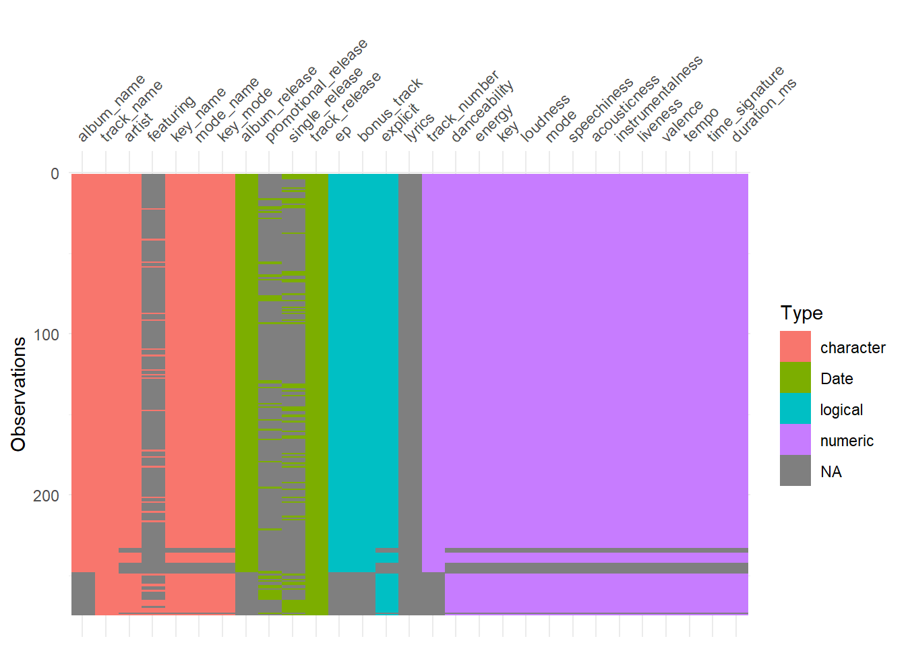
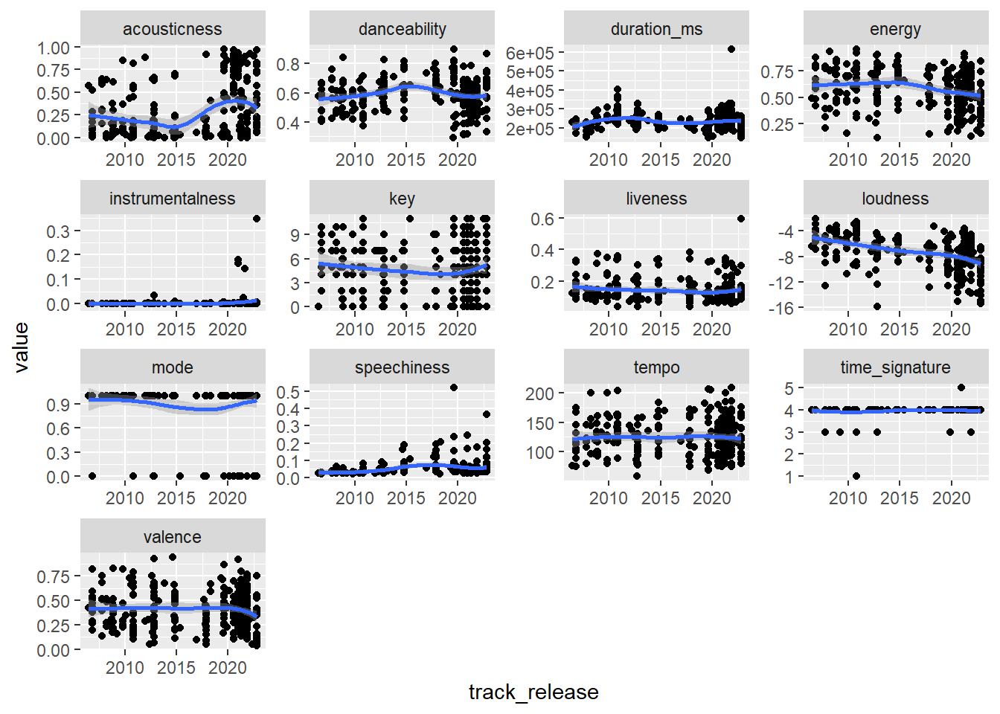
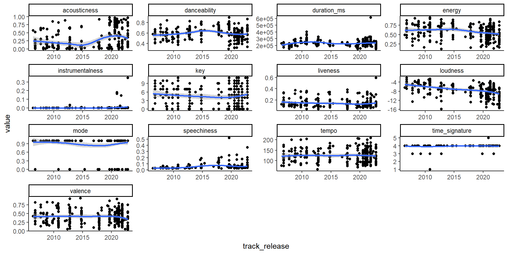

library(tidyverse) # Data Wrangling and Visualization
library(visdat) # View data in Exploratory Data Analysis
library(gganimate) # For animation
library(transformr) # to smoothly animate polygons and paths
# Using Option 2: Read data directly from GitHub
taylor_album_songs <- readr::read_csv('https://raw.githubusercontent.com/rfordatascience/tidytuesday/master/data/2023/2023-10-17/taylor_album_songs.csv')
taylor_all_songs <- readr::read_csv('https://raw.githubusercontent.com/rfordatascience/tidytuesday/master/data/2023/2023-10-17/taylor_all_songs.csv')
taylor_albums <- readr::read_csv('https://raw.githubusercontent.com/rfordatascience/tidytuesday/master/data/2023/2023-10-17/taylor_albums.csv')Dancing Through the Years: A Data-Driven Look at Taylor Swift’s Music
Looking at the W. Jake Thompson’s curated data-set of Taylor Swift songs as a part of #TidyTuesday (Oct 10, 2023)
Step 1: Data Import
Getting the data from TidyTuesday Retrieve the data originally from the taylor R package from W. Jake Thompson is a curated data set of Taylor Swift songs, including lyrics and audio characteristics. The data comes from Genius and the Spotify API.
Step 2: Some Exploratory Data Analysis
# Since all songs of Taylor Swift occur in taylor_all_songs, let us
# focus on that data set only for now
taylor_album_songs |>
anti_join(taylor_all_songs)# A tibble: 0 × 29
# ℹ 29 variables: album_name <chr>, ep <lgl>, album_release <date>,
# track_number <dbl>, track_name <chr>, artist <chr>, featuring <chr>,
# bonus_track <lgl>, promotional_release <date>, single_release <date>,
# track_release <date>, danceability <dbl>, energy <dbl>, key <dbl>,
# loudness <dbl>, mode <dbl>, speechiness <dbl>, acousticness <dbl>,
# instrumentalness <dbl>, liveness <dbl>, valence <dbl>, tempo <dbl>,
# time_signature <dbl>, duration_ms <dbl>, explicit <lgl>, key_name <chr>, …# The code uses the dplyr pipe operator (%>%) to take taylor_album_songs data frame,
# and then it performs an anti-join operation with taylor_all_songs data frame.
# An anti-join returns rows from the left data frame (taylor_album_songs) that do not have
# matching keys in the right data frame (taylor_all_songs).
# Seeing the number of distinct values for each variable
taylor_all_songs |>
summarise(across(.cols = everything(),
.fns = n_distinct)) |>
pivot_longer(cols = everything(),
names_to = "Variable",
values_to = "n_distinct")# A tibble: 29 × 2
Variable n_distinct
<chr> <int>
1 album_name 15
2 ep 3
3 album_release 15
4 track_number 31
5 track_name 273
6 artist 11
7 featuring 20
8 bonus_track 3
9 promotional_release 40
10 single_release 62
# ℹ 19 more rows# This code first takes the taylor_all_songs data frame and calculates the
# number of distinct values for each variable/column using the summarise and
# across functions. It then uses pivot_longer to reshape the data, converting
# the variable names to "Variable" and the distinct counts to "n_distinct".
# Finally, it prints the resulting data frame with all rows (n = Inf).
# Vis_dat the data
taylor_all_songs |>
vis_dat()
# The code takes the taylor_all_songs data frame and uses the vis_dat function
# to visualize the data. This function is likely used for exploratory data
# analysis to gain insights into the dataset.
# We see the patterns over time for different variables of her
# songs to see any distinct patterns
taylor_all_songs |>
select(album_name, track_name, track_release,
danceability:duration_ms) |>
pivot_longer(cols = -c(album_name, track_name, track_release),
names_to = "indicator",
values_to = "value") |>
ggplot(aes(x = track_release,
y = value)) +
geom_point() +
geom_smooth() +
facet_wrap(~ indicator, scales = "free")
# This code selects specific columns from the taylor_all_songs data frame
# (album_name, track_name, track_release, and all columns from danceability
# to duration_ms). It then reshapes the data using pivot_longer, creating a
# long format with "indicator" and "value" columns. Finally, it creates a
# ggplot visualization to show patterns over time by plotting points and
# smoothed lines with facets based on the "indicator" variable.Creating a static graph which we will animate later, and setting the span parameter for loess smoother.
#define span to use
span_taylor = 0.75# Take the taylor_all_songs data frame and select specific columns:
taylor_all_songs |>
select(album_name,
track_release,
danceability,
acousticness) |>
# Pivot the selected columns into a longer format with "indicators" and "values" columns:
pivot_longer(cols = -c(album_name, track_release),
names_to = "indicators",
values_to = "values") |>
# Create a ggplot visualization, setting aesthetics and geometries:
ggplot(aes(x = track_release,
y = values,
col = indicators,
label = indicators)) +
# Add jittered points to the plot with specified width, height, and alpha:
geom_jitter(width = 20,
height = 0.001,
alpha = 0.2) +
# Add a smoothed line to the plot with specified span, se, and alpha:
geom_smooth(span = span_taylor,
se = FALSE,
alpha = 0.6,
lwd = 1.2) +
# Add text labels to the plot, referencing data from taylor_albums:
geom_text(data = taylor_albums,
mapping = aes(x = album_release,
y = 0,
label = album_name),
col = "black",
angle = 90,
hjust = "left") +
# Apply a minimal theme to the plot:
theme_minimal() +
# Customize the x-axis labels using breaks and formatted labels:
scale_x_continuous(breaks = taylor_albums$album_release,
labels = format(taylor_albums$album_release,
"%b %Y")) +
# Using color palettes from the tayloRswift package for Taylor Swift's albums:
tayloRswift::scale_color_taylor(palette = "lover") +
# Add labels and customize the appearance of the plot:
labs(x = NULL,
y = "Spotify App Score for songs",
color = NULL) +
# Further customize the appearance of the plot using theme settings:
theme(axis.text.x = element_text(angle = 90),
panel.grid.minor.x = element_blank(),
panel.grid.minor.y = element_blank(),
legend.position = "bottom")
Step 3: Creating an animated plot
# creating a loess predictor variable
df <- taylor_all_songs |>
select(album_name,
track_release,
danceability,
acousticness) |>
drop_na()
gganim <- df |>
mutate(
smooth_dance = predict(loess(danceability ~ as.numeric(track_release),
data = df,
span = span_taylor)),
smooth_acous = predict(loess(acousticness ~ as.numeric(track_release),
data = df,
span = span_taylor))
) |>
pivot_longer(cols = starts_with("smooth"),
names_to = "smooth_indicator",
values_to = "value_smooth") |>
ggplot(aes(x = track_release)) +
geom_jitter(aes(y = danceability,
group = seq_along(track_release)),
width = 20,
height = 0.001,
alpha = 0.3,
size = 3,
color = "#54483e") +
geom_jitter(aes(y = acousticness,
group = seq_along(track_release)),
width = 20,
height = 0.001,
alpha = 0.3,
size = 3,
color = "#b8396b") +
ggtext::geom_richtext(data = taylor_albums,
mapping = aes(x = album_release,
y = 0,
label = album_name),
col = "black",
angle = 90,
hjust = "left",
alpha = 0.8) +
geom_line(aes(y = value_smooth,
col = smooth_indicator),
alpha = 0.7,
lwd = 2) +
theme_minimal() +
scale_x_continuous(breaks = taylor_albums$album_release,
labels = format(taylor_albums$album_release,
"%b %Y")) +
# Using color palettes for package tayloRswift for her albums
tayloRswift::scale_color_taylor(palette = "lover",
labels = c("Acousticness",
"Danceability") ) +
labs(x = NULL,
y = "Spotify App Score for songs",
color = NULL,
title = "Taylor Swift's songs over the years",
subtitle = "After 2015: Increased Acousticness, reduced danceability",
caption = "Data: taylor R package (W. Jake Thompson). Animation: Aditya Dahiya #TidyTuesday") +
theme(axis.text.x = element_text(angle = 90,
size = 10),
panel.grid.minor.x = element_blank(),
panel.grid.minor.y = element_blank(),
legend.position = "bottom",
title = element_text(hjust = 0.5,
size = 20),
legend.text = element_text(size = 20)) +
transition_reveal(track_release) +
ease_aes("linear") +
shadow_mark(past = TRUE)
animate(gganim,
height = 600,
width = 800,
fps = 10,
duration = 10,
start_pause = 3,
end_pause = 10)
anim_save("docs/taylor_anim1.gif")
Future Plan: Creating an image for the page from AI images: Taylor Swift + R Tidyverse